import ast # For ensuring preprocessed data is loaded as intended data types
import numpy as np
import pandas as pd
import seaborn as sns # For making plots
sns.set_theme(context = "notebook", style = "whitegrid")
import os # For saving plots
os.makedirs("./images", exist_ok = True)
import matplotlib.pyplot as plt
from sklearn.calibration import LabelEncoder
from sklearn.preprocessing import MinMaxScaler
from sklearn.decomposition import PCA
from sklearn.model_selection import train_test_splitThis notebook’s goal:
To complete and present exploratory data analysis, plotting, and other data mining insights from the Reddit joke dataset for this project. Completed for INFO 523 (Data Mining) - Summer 2025.
Our analysis writeup is below the code, near the bottom of this notebook.
Gather imports
Create helper functions
### AHN
def show_df_details(df, details_to_include = []):
if "head" in details_to_include:
print(f"\n** HEAD:\n{df.head()}\n")
if "tail" in details_to_include:
print(f"\n** TAIL:\n{df.tail()}\n")
if "info" in details_to_include:
print(f"\n** INFO:\n")
df.info()
print(f"\n")
if "describe" in details_to_include:
print(f"\n** DESCRIBE:\n{df.describe()}\n")
if "describe-all" in details_to_include:
print(f"\n** DESCRIBE (ALL):\n{df.describe(include = 'all')}\n")### CATLoad preprocessed data
## LOAD DATA
preprocessed_df = pd.read_csv(
"./data/preprocessed_dataset.csv",
converters={"themes_found": ast.literal_eval})
# To verify our themes_found tuples (str, int) came in as intended:
print(f"\n** Verifying themes_found is tuples:\n")
total_themes = 0
for i, row in preprocessed_df.head(5).iterrows():
print(f"@ {i}:")
for theme, count in row["themes_found"]:
print(f"\t{theme} ({count})")
total_themes += count
print(f"\nFound {total_themes} themes in the first 5 rows\n")
## MERGE DATAFRAMES
jokes_df = preprocessed_df
## REVIEW DETAILS
show_df_details(jokes_df, ["dtypes", "head", "tail", "info", "describe"])
** Verifying themes_found is tuples:
@ 0:
ethnicity (1)
@ 1:
ethnicity (3)
@ 2:
ethnicity (3)
@ 3:
gender (1)
class (1)
@ 4:
class (2)
age (1)
Found 12 themes in the first 5 rows
** HEAD:
id score overall_length distinct_words_count theme_gender_count \
0 5tz52q 1.0 22 7 0
1 5tz4dd 0.0 27 12 0
2 5tz319 0.0 40 18 0
3 5tz2wj 1.0 105 35 1
4 5tz1pc 0.0 30 16 0
theme_gender_bool theme_ethnicity_count theme_ethnicity_bool \
0 False 1 True
1 False 3 True
2 False 3 True
3 True 0 False
4 False 0 False
theme_sexuality_count theme_sexuality_bool ... theme_ability_bool \
0 0 False ... False
1 0 False ... False
2 0 False ... False
3 0 False ... False
4 0 False ... False
theme_age_count theme_age_bool theme_weight_count theme_weight_bool \
0 0 False 0 False
1 0 False 0 False
2 0 False 0 False
3 0 False 0 False
4 1 True 0 False
theme_appearance_count theme_appearance_bool theme_class_count \
0 0 False 0
1 0 False 0
2 0 False 0
3 0 False 1
4 0 False 2
theme_class_bool themes_found
0 False [(ethnicity, 1)]
1 False [(ethnicity, 3)]
2 False [(ethnicity, 3)]
3 True [(gender, 1), (class, 1)]
4 True [(class, 2), (age, 1)]
[5 rows x 21 columns]
** TAIL:
id score overall_length distinct_words_count \
194548 1a89ts 5.0 21 8
194549 1a87we 12.0 7 4
194550 1a7xnd 44.0 19 8
194551 1a813f 63.0 123 40
194552 1a801u 0.0 16 5
theme_gender_count theme_gender_bool theme_ethnicity_count \
194548 1 True 0
194549 0 False 0
194550 2 True 0
194551 15 True 0
194552 0 False 0
theme_ethnicity_bool theme_sexuality_count theme_sexuality_bool \
194548 False 0 False
194549 False 0 False
194550 False 0 False
194551 False 2 True
194552 False 0 False
... theme_ability_bool theme_age_count theme_age_bool \
194548 ... False 0 False
194549 ... True 0 False
194550 ... False 0 False
194551 ... False 1 True
194552 ... False 0 False
theme_weight_count theme_weight_bool theme_appearance_count \
194548 0 False 0
194549 0 False 0
194550 0 False 0
194551 0 False 0
194552 0 False 0
theme_appearance_bool theme_class_count theme_class_bool \
194548 False 0 False
194549 False 0 False
194550 False 0 False
194551 False 1 True
194552 False 0 False
themes_found
194548 [(gender, 1)]
194549 [(ability, 1)]
194550 [(gender, 2)]
194551 [(gender, 15), (sexuality, 2), (age, 1), (clas...
194552 []
[5 rows x 21 columns]
** INFO:
<class 'pandas.core.frame.DataFrame'>
RangeIndex: 194553 entries, 0 to 194552
Data columns (total 21 columns):
# Column Non-Null Count Dtype
--- ------ -------------- -----
0 id 194553 non-null object
1 score 194553 non-null float64
2 overall_length 194553 non-null int64
3 distinct_words_count 194553 non-null int64
4 theme_gender_count 194553 non-null int64
5 theme_gender_bool 194553 non-null bool
6 theme_ethnicity_count 194553 non-null int64
7 theme_ethnicity_bool 194553 non-null bool
8 theme_sexuality_count 194553 non-null int64
9 theme_sexuality_bool 194553 non-null bool
10 theme_ability_count 194553 non-null int64
11 theme_ability_bool 194553 non-null bool
12 theme_age_count 194553 non-null int64
13 theme_age_bool 194553 non-null bool
14 theme_weight_count 194553 non-null int64
15 theme_weight_bool 194553 non-null bool
16 theme_appearance_count 194553 non-null int64
17 theme_appearance_bool 194553 non-null bool
18 theme_class_count 194553 non-null int64
19 theme_class_bool 194553 non-null bool
20 themes_found 194553 non-null object
dtypes: bool(8), float64(1), int64(10), object(2)
memory usage: 20.8+ MB
** DESCRIBE:
score overall_length distinct_words_count \
count 194553.000000 194553.000000 194553.000000
mean 118.223255 47.924859 17.107451
std 936.231277 106.849345 26.195536
min 0.000000 0.000000 0.000000
25% 0.000000 13.000000 6.000000
50% 3.000000 19.000000 9.000000
75% 16.000000 36.000000 15.000000
max 48526.000000 7795.000000 1128.000000
theme_gender_count theme_ethnicity_count theme_sexuality_count \
count 194553.000000 194553.000000 194553.000000
mean 1.026008 0.246257 0.448351
std 2.692216 1.328892 1.336785
min 0.000000 0.000000 0.000000
25% 0.000000 0.000000 0.000000
50% 0.000000 0.000000 0.000000
75% 1.000000 0.000000 0.000000
max 108.000000 334.000000 51.000000
theme_ability_count theme_age_count theme_weight_count \
count 194553.000000 194553.000000 194553.000000
mean 0.078585 0.221770 0.042246
std 0.411222 1.048893 0.482132
min 0.000000 0.000000 0.000000
25% 0.000000 0.000000 0.000000
50% 0.000000 0.000000 0.000000
75% 0.000000 0.000000 0.000000
max 21.000000 150.000000 170.000000
theme_appearance_count theme_class_count
count 194553.000000 194553.000000
mean 0.150704 0.220120
std 0.782460 0.839879
min 0.000000 0.000000
25% 0.000000 0.000000
50% 0.000000 0.000000
75% 0.000000 0.000000
max 171.000000 36.000000
Additional data prep
##Cat
## Data Prep for Exploratory Data Analysis
#removes ID and creates a copy of the joke df
jokes_model = jokes_df.copy()
jokes_model.drop(columns = ["id", "themes_found"], inplace = True)### AHN
## STATIC GLOBALS
THEMES = ['gender','ethnicity','sexuality','ability','age','weight','appearance','class']
COUNT_COL_NAMES = [f"theme_{t}_count" for t in THEMES]
## HELPER FUNCTION
def make_long_df(df, min_count):
long_df_list = []
# For each theme, keep rows meeting threshold
for theme in THEMES:
included_rows = df[df[f"theme_{theme}_count"] >= min_count].copy()
included_rows["theme"] = theme
long_df_list.append(included_rows)
# Handle rows with no themes (for this threshold)
mask_any = (df[[f"theme_{t}_count" for t in THEMES]] >= min_count).any(axis = 1)
none_rows = df[~mask_any].copy()
none_rows["theme"] = "none"
long_df_list.append(none_rows)
# Put all together
return pd.concat(long_df_list, ignore_index=True)
## GET THEME SETS (BUILD DATAFRAMES)
# Make melted dataframes, which have a "theme" column (rows with multiple themes are duplicated, per theme)
# This is our general dataframe for analysis - it introduces "theme" column for easy coloring, summing, averaging by theme
melted_default = make_long_df(jokes_df, min_count = 1)
# Insightful to have a set which is stricter, requiring at least a couple words to match a theme
melted_strict = make_long_df(jokes_df, min_count = 2)
# Example usage
print(f"\n** HEAD (default):\n{melted_default.head()}\n")
print(f"\n** HEAD (strict):\n{melted_strict.head()}\n")
print(f"\n** SAMPLE (default):\n{melted_default.sample(5, random_state = None)}\n")
print(f"\n** SAMPLE (strict):\n{melted_strict.sample(5, random_state = None)}\n")
# Gather theme sub-dfs easily
print(melted_strict[melted_strict["theme"] == "ethnicity"].head())
# Check everything is as expected
# 1 - melted row counts should not match original joke df; default should have more, strict should be fewer
print(f"\n** ROW COUNTS\nOriginal: {len(jokes_df)} | Melted (default): {len(melted_default)} | Melted (strict): {len(melted_strict)}\n")
# 2 - look at theme distributions briefly
print(f"\n** THEME DISTRIBUTION:\nDefault:\n{melted_default["theme"].value_counts()}\n\nStrict:\n{melted_strict["theme"].value_counts()}\n\n")
# 3 - each melted row should have one theme value (might be "none")
assert "theme" in melted_default.columns
assert melted_default["theme"].notna().all()
** HEAD (default):
id score overall_length distinct_words_count theme_gender_count \
0 5tz2wj 1.0 105 35 1
1 5tz0ef 0.0 13 9 1
2 5tyx6v 3.0 104 37 12
3 5tyt6c 2.0 16 7 1
4 5tyqag 62.0 249 67 15
theme_gender_bool theme_ethnicity_count theme_ethnicity_bool \
0 True 0 False
1 True 0 False
2 True 0 False
3 True 0 False
4 True 2 True
theme_sexuality_count theme_sexuality_bool ... theme_age_count \
0 0 False ... 0
1 0 False ... 0
2 0 False ... 1
3 0 False ... 0
4 3 True ... 1
theme_age_bool theme_weight_count theme_weight_bool \
0 False 0 False
1 False 0 False
2 True 0 False
3 False 0 False
4 True 0 False
theme_appearance_count theme_appearance_bool theme_class_count \
0 0 False 1
1 0 False 0
2 1 True 0
3 0 False 0
4 0 False 1
theme_class_bool themes_found theme
0 True [(gender, 1), (class, 1)] gender
1 False [(gender, 1)] gender
2 False [(gender, 12), (ability, 1), (age, 1), (appear... gender
3 False [(gender, 1)] gender
4 True [(gender, 15), (sexuality, 3), (ethnicity, 2),... gender
[5 rows x 22 columns]
** HEAD (strict):
id score overall_length distinct_words_count theme_gender_count \
0 5tyx6v 3.0 104 37 12
1 5tyqag 62.0 249 67 15
2 5tygzy 12.0 318 94 8
3 5tygyu 1.0 146 42 6
4 5tygq5 5.0 117 29 3
theme_gender_bool theme_ethnicity_count theme_ethnicity_bool \
0 True 0 False
1 True 2 True
2 True 0 False
3 True 0 False
4 True 0 False
theme_sexuality_count theme_sexuality_bool ... theme_age_count \
0 0 False ... 1
1 3 True ... 1
2 0 False ... 4
3 3 True ... 0
4 0 False ... 0
theme_age_bool theme_weight_count theme_weight_bool \
0 True 0 False
1 True 0 False
2 True 0 False
3 False 0 False
4 False 0 False
theme_appearance_count theme_appearance_bool theme_class_count \
0 1 True 0
1 0 False 1
2 4 True 0
3 4 True 4
4 0 False 1
theme_class_bool themes_found theme
0 False [(gender, 12), (ability, 1), (age, 1), (appear... gender
1 True [(gender, 15), (sexuality, 3), (ethnicity, 2),... gender
2 False [(gender, 8), (age, 4), (appearance, 4), (abil... gender
3 True [(gender, 6), (appearance, 4), (class, 4), (se... gender
4 True [(gender, 3), (class, 1)] gender
[5 rows x 22 columns]
** SAMPLE (default):
id score overall_length distinct_words_count \
62864 1eft7k 0.0 22 8
212551 5s6t2c 1057.0 17 7
228234 4ncdsf 1.0 14 6
60528 1mt6b4 26.0 19 10
278107 2m5i2y 2.0 17 6
theme_gender_count theme_gender_bool theme_ethnicity_count \
62864 1 True 0
212551 0 False 0
228234 0 False 0
60528 2 True 0
278107 0 False 0
theme_ethnicity_bool theme_sexuality_count theme_sexuality_bool \
62864 False 0 False
212551 False 0 False
228234 False 0 False
60528 False 0 False
278107 False 0 False
... theme_age_count theme_age_bool theme_weight_count \
62864 ... 0 False 0
212551 ... 0 False 0
228234 ... 0 False 0
60528 ... 0 False 0
278107 ... 0 False 0
theme_weight_bool theme_appearance_count theme_appearance_bool \
62864 False 0 False
212551 False 0 False
228234 False 0 False
60528 False 0 False
278107 False 0 False
theme_class_count theme_class_bool themes_found theme
62864 0 False [(gender, 1)] gender
212551 0 False [] none
228234 0 False [] none
60528 0 False [(gender, 2)] gender
278107 0 False [] none
[5 rows x 22 columns]
** SAMPLE (strict):
id score overall_length distinct_words_count \
137017 430fo8 2.0 13 7
47389 44tsr7 2.0 86 28
12337 3wqv2y 0.0 107 38
161615 3jdbgd 0.0 10 4
126615 4cmywb 4.0 40 13
theme_gender_count theme_gender_bool theme_ethnicity_count \
137017 0 False 0
47389 0 False 13
12337 6 True 0
161615 0 False 0
126615 0 False 0
theme_ethnicity_bool theme_sexuality_count theme_sexuality_bool \
137017 False 0 False
47389 True 2 True
12337 False 0 False
161615 False 0 False
126615 False 0 False
... theme_age_count theme_age_bool theme_weight_count \
137017 ... 0 False 0
47389 ... 0 False 0
12337 ... 0 False 0
161615 ... 0 False 0
126615 ... 0 False 0
theme_weight_bool theme_appearance_count theme_appearance_bool \
137017 False 0 False
47389 False 0 False
12337 False 0 False
161615 False 0 False
126615 False 0 False
theme_class_count theme_class_bool \
137017 0 False
47389 0 False
12337 1 True
161615 0 False
126615 0 False
themes_found theme
137017 [] none
47389 [(ethnicity, 13), (sexuality, 2)] sexuality
12337 [(gender, 6), (class, 1)] gender
161615 [] none
126615 [] none
[5 rows x 22 columns]
id score overall_length distinct_words_count \
33606 5tz4dd 0.0 27 12
33607 5tz319 0.0 40 18
33608 5tyqag 62.0 249 67
33609 5txzbr 1.0 77 31
33610 5txxuo 1.0 251 104
theme_gender_count theme_gender_bool theme_ethnicity_count \
33606 0 False 3
33607 0 False 3
33608 15 True 2
33609 2 True 4
33610 8 True 2
theme_ethnicity_bool theme_sexuality_count theme_sexuality_bool ... \
33606 True 0 False ...
33607 True 0 False ...
33608 True 3 True ...
33609 True 1 True ...
33610 True 0 False ...
theme_age_count theme_age_bool theme_weight_count theme_weight_bool \
33606 0 False 0 False
33607 0 False 0 False
33608 1 True 0 False
33609 2 True 0 False
33610 0 False 0 False
theme_appearance_count theme_appearance_bool theme_class_count \
33606 0 False 0
33607 0 False 0
33608 0 False 1
33609 0 False 0
33610 2 True 5
theme_class_bool themes_found \
33606 False [(ethnicity, 3)]
33607 False [(ethnicity, 3)]
33608 True [(gender, 15), (sexuality, 3), (ethnicity, 2),...
33609 False [(ethnicity, 4), (gender, 2), (age, 2), (sexua...
33610 True [(gender, 8), (ability, 6), (class, 5), (ethni...
theme
33606 ethnicity
33607 ethnicity
33608 ethnicity
33609 ethnicity
33610 ethnicity
[5 rows x 22 columns]
** ROW COUNTS
Original: 194553 | Melted (default): 292035 | Melted (strict): 226436
** THEME DISTRIBUTION:
Default:
theme
none 80870
gender 64055
sexuality 42254
ethnicity 24795
class 24265
age 20953
appearance 17425
ability 11273
weight 6145
Name: count, dtype: int64
Strict:
theme
none 142503
gender 33606
sexuality 17054
ethnicity 8454
class 8180
age 8077
appearance 5214
ability 2209
weight 1139
Name: count, dtype: int64
Exploratory data analysis (EDA)
### AHN### CAT
#encodes all the boolean values into 0 or 1
le = LabelEncoder()
jokes_model['theme_gender_bool'] = le.fit_transform(jokes_model['theme_gender_bool'])
jokes_model['theme_ethnicity_bool'] = le.fit_transform(jokes_model['theme_ethnicity_bool'])
jokes_model['theme_sexuality_bool'] = le.fit_transform(jokes_model['theme_sexuality_bool'])
jokes_model['theme_ability_bool'] = le.fit_transform(jokes_model['theme_ability_bool'])
jokes_model['theme_age_bool'] = le.fit_transform(jokes_model['theme_age_bool'])
jokes_model['theme_weight_bool'] = le.fit_transform(jokes_model['theme_weight_bool'])
jokes_model['theme_appearance_bool'] = le.fit_transform(jokes_model['theme_appearance_bool'])
jokes_model['theme_class_bool'] = le.fit_transform(jokes_model['theme_class_bool']) #finds the highly correlated pairs
#creates a correlation matrix for each of the numeric columns
corr_matrix = jokes_model.corr()
#sets the threshold to 50%. Played with threshold, but higher ones gave too little
threshold = 0.50
#stores the pairs that surpass the threshold for highly correlated variables
highly_correlated_pairs = [(i, j) for i in corr_matrix.columns for j in corr_matrix.columns if (i != j) and (abs(corr_matrix[i][j]) > threshold)]
#prints out each pair
print("Highly correlated pairs:")
for pair in highly_correlated_pairs:
print(pair)
print("done")Highly correlated pairs:
('overall_length', 'distinct_words_count')
('overall_length', 'theme_gender_count')
('distinct_words_count', 'overall_length')
('distinct_words_count', 'theme_gender_count')
('theme_gender_count', 'overall_length')
('theme_gender_count', 'distinct_words_count')
('theme_gender_count', 'theme_gender_bool')
('theme_gender_bool', 'theme_gender_count')
('theme_sexuality_count', 'theme_sexuality_bool')
('theme_sexuality_bool', 'theme_sexuality_count')
('theme_ability_count', 'theme_ability_bool')
('theme_ability_bool', 'theme_ability_count')
('theme_age_count', 'theme_age_bool')
('theme_age_bool', 'theme_age_count')
('theme_weight_count', 'theme_appearance_count')
('theme_appearance_count', 'theme_weight_count')
('theme_appearance_count', 'theme_appearance_bool')
('theme_appearance_bool', 'theme_appearance_count')
('theme_class_count', 'theme_class_bool')
('theme_class_bool', 'theme_class_count')
done#sns.pairplot(jokes_model, y_vars=["score"])
#all the pair plot values have a similar distribution (ie non-boolean values have one distribution while boolean values have 0 being larger than 1)
#chose examples for ease of visualisation
sns.pairplot(jokes_model, y_vars=["score"], x_vars=["overall_length", "theme_gender_count", "theme_gender_bool"])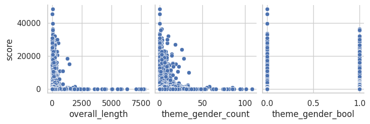
The graphs show an inverse relationship or (1/x). Thus, we linearlized by dividing the non-target variables that were continuous by 1.
#all inverse relationship variables are linearized
#stores column names
inverse = ["overall_length", "distinct_words_count", "theme_gender_count", "theme_ethnicity_count", "theme_sexuality_count",
"theme_ability_count", "theme_weight_count", "theme_appearance_count", "theme_class_count", "theme_age_count"]
#inverses the continuous columns
for col in inverse:
jokes_model[col] = 1 / (jokes_model[col] + 1)#finds outliers, takes the 5th and 95th quartile respectively to maximize values kept in
dataNum = jokes_model.select_dtypes(include = np.number)
dataNumCol = dataNum.columns[...]
#iterates through the list of column names
for i in dataNumCol:
#gets the entire column for each numeric column (as it loops)
dataNum_i = dataNum.loc[:, i]
#calculates the 5 and 95th quartile values (rounded to 3 decimal places)
q5, q95 = round((dataNum_i.quantile(q = 0.05)), 3), round((dataNum_i.quantile(q = 0.95)), 3)
#gets the interquartile range from 95 quartile - 5 qartile rounded to 3 decimal places
IQR = round((q95-q5), 3)
#creates the cutoff for outliers with the equation IQR*1.5
cut_off = IQR * 1.5
#Gets the lower and upper values specifically with the quartile + or - the cutoff
lower, upper = round((q5 - cut_off), 3), round((q95 + cut_off), 3)
# Outliers not printed for readability
#print(' ')
# For each value of the column, print the 5th and 95th percentiles and IQR
#print(i, 'q5 =', q5, 'q95 =', q95, 'IQR =', IQR)
# Print the lower and upper cut-offs
#print('lower, upper:', lower, upper)
# Count the number of outliers outside the (lower, upper) limits, print that value
#print('Number of Outliers: ', dataNum_i[(dataNum_i < lower) | (dataNum_i > upper)].count())#creates a copy of country cleaned
jokes_model_copy = jokes_model.copy()
outliers = ["score", "overall_length", "distinct_words_count", "theme_gender_count", "theme_ethnicity_count", "theme_sexuality_count",
"theme_ability_count", "theme_age_count", "theme_weight_count", "theme_appearance_count", "theme_class_count"]
for each in outliers:
#finds the 5th and 95th quartile rounded to the 3rd decimal point
q5, q95 = round((jokes_model_copy[each].quantile(q = 0.05)), 3), round((jokes_model_copy[each].quantile(q = 0.95)), 3)
#finds the IQR rounded to the third decimal point
IQR = round((q95-q5), 3)
#obtains the cutoff value through the equation IQR * 1.5
cut_off = IQR * 1.5
#gets the upper and lower bounds
lower, upper = round((q5 - cut_off), 3), round((q95 + cut_off), 3)
#gits rid of everthing that is above and below the cutoff
jokes_model_copy[each] = np.clip(jokes_model_copy[each], lower, upper) #*#Normalizes all the numeric columns, most numeric columns should already be scaled except score
scaler = MinMaxScaler()
scaled_data = scaler.fit_transform(jokes_model_copy)#copies jokes model for regression analysis
jokes_reg = jokes_model_copy.copy()
#copies jokes model for classification analysis
#creates a new variable that determines if a joke is liked more than the median score
jokes_class = jokes_model_copy.copy()
jokes_class["score_class"] = np.where(jokes_class["score"] > jokes_class["score"].median(), 1, 0)
jokes_class.drop(columns=["score"], inplace=True)
jokes_class.head()| overall_length | distinct_words_count | theme_gender_count | theme_gender_bool | theme_ethnicity_count | theme_ethnicity_bool | theme_sexuality_count | theme_sexuality_bool | theme_ability_count | theme_ability_bool | theme_age_count | theme_age_bool | theme_weight_count | theme_weight_bool | theme_appearance_count | theme_appearance_bool | theme_class_count | theme_class_bool | score_class | |
|---|---|---|---|---|---|---|---|---|---|---|---|---|---|---|---|---|---|---|---|
| 0 | 0.043478 | 0.125000 | 1.0 | 0 | 0.50 | 1 | 1.0 | 0 | 1.0 | 0 | 1.0 | 0 | 1.0 | 0 | 1.0 | 0 | 1.000000 | 0 | 0 |
| 1 | 0.035714 | 0.076923 | 1.0 | 0 | 0.25 | 1 | 1.0 | 0 | 1.0 | 0 | 1.0 | 0 | 1.0 | 0 | 1.0 | 0 | 1.000000 | 0 | 0 |
| 2 | 0.024390 | 0.052632 | 1.0 | 0 | 0.25 | 1 | 1.0 | 0 | 1.0 | 0 | 1.0 | 0 | 1.0 | 0 | 1.0 | 0 | 1.000000 | 0 | 0 |
| 3 | 0.009434 | 0.027778 | 0.5 | 1 | 1.00 | 0 | 1.0 | 0 | 1.0 | 0 | 1.0 | 0 | 1.0 | 0 | 1.0 | 0 | 0.500000 | 1 | 0 |
| 4 | 0.032258 | 0.058824 | 1.0 | 0 | 1.00 | 0 | 1.0 | 0 | 1.0 | 0 | 0.5 | 1 | 1.0 | 0 | 1.0 | 0 | 0.333333 | 1 | 0 |
Plotting & visual analysis
### AHN
# Each of these plots as default then as strict
# Use a fixed order and set of colors
THEME_ORDER = ['none', 'gender','ethnicity','sexuality','ability','age','weight','appearance','class']
THEME_PALETTE = {
'none': '#9e9e9e', # gray
'gender': '#1f77b4', # blue
'ethnicity': '#ff7f0e', # orange
'sexuality': '#2ca02c', # green
'ability': '#d62728', # red
'age': '#9467bd', # purple
'weight': '#8c564b', # brown
'appearance': '#e377c2', # pink
'class': '#7f7f7f' # dark gray
}
# 1 - Theme prevalence - bar plot
# > How common is each theme?
def plot_bar_theme_prevalence(melted, title, outpath):
prev = (melted["theme"]
.value_counts()
.rename_axis("theme")
.reset_index(name = "count"))
# Reindex to ensure fixed order (including missing categories)
prev = prev.set_index("theme").reindex(THEME_ORDER, fill_value = 0).reset_index()
# Get the total count of jokes
total = prev["count"].sum()
plt.figure(figsize = (10, 5))
ax = sns.barplot(
data = prev,
x = "theme", y = "count",
order = THEME_ORDER,
hue = "theme", hue_order = THEME_ORDER,
palette = THEME_PALETTE,
dodge = False
)
ax.set_title(title)
ax.set_xlabel(""); ax.set_ylabel("Number of jokes")
# Annotate each bar with its count and % of total jokes
for p in ax.patches:
count = int(p.get_height())
percent = 100 * count / total if total > 0 else 0
ax.annotate(f"{count} ({percent:.1f}%)",
(p.get_x() + p.get_width() / 2., p.get_height()),
ha = 'center', va = 'bottom',
xytext = (0, 3), textcoords = "offset points",
fontsize = 10)
plt.xticks(rotation = 30, ha = "right")
plt.tight_layout()
plt.savefig(outpath, dpi = 150)
plt.show()
plot_bar_theme_prevalence(
melted_default,
"Theme prevalence (default, ≥1 theme words)",
"./images/ahn/1-bar_plot_theme_prevalence_default.png"
)
plot_bar_theme_prevalence(
melted_strict,
"Theme prevalence (strict, ≥2 theme words)",
"./images/ahn/1-bar_plot_theme_prevalence_strict.png"
)
# 2 - Scores by theme - Box plot (log?)
# > Which themes get higher or lower scores?
def plot_box_scores_by_theme(melted, title, outpath, log = True, stat = "median"):
# Optional filtering for log scale; boxplot can't plot non-positive on log y
df = melted.copy()
if log:
df = df[df["score"] > 0].copy()
plt.figure(figsize = (10, 5))
ax = sns.boxplot(
data = df,
x = "theme", y = "score",
order = THEME_ORDER,
palette = THEME_PALETTE, # map colors by x
showmeans = True,
meanprops = {"marker": "o", "markerfacecolor": "white", "markeredgecolor": "black"}
)
ax.set_title(title)
ax.set_xlabel(""); ax.set_ylabel("Score (log # of upvotes)")
if log:
ax.set_yscale("log")
# Add median annotation on box
agg_fn = {"median": pd.Series.median, "mean": pd.Series.mean}.get(stat, pd.Series.median)
grouped = (df.groupby("theme")["score"].apply(agg_fn)
.reindex(THEME_ORDER)) # Keep fixed order
for i, theme in enumerate(THEME_ORDER):
val = grouped.get(theme)
if pd.isna(val):
continue
# Small pixel offset above the box (like bar labels)
ax.annotate(f"{val:.0f}",
(i, val),
ha = 'center', va = 'bottom',
xytext = (0, 3), textcoords = "offset points",
fontsize = 10)
plt.xticks(rotation = 30, ha = "right")
plt.tight_layout()
plt.savefig(outpath, dpi = 150)
plt.show()
plot_box_scores_by_theme(
melted_default,
"Log scores by theme (default, ≥1 theme words)",
"./images/ahn/2-box_plot_scores_default.png"
)
plot_box_scores_by_theme(
melted_strict,
"Log scores by theme (strict, ≥2 theme words)",
"./images/ahn/2-box_plot_scores_strict.png"
)
# 3 - Scores vs number of themes - Box plot
# > Does a joke having more themes correlate with a higher score?
def plot_box_score_vs_num_themes(melted, title, outpath, log = True, min_count = 1):
# Remove duplicates so each joke is only counted once
base = melted.drop_duplicates(subset = "id")[["id", "score", "themes_found"]].copy()
base["themes_n"] = base["themes_found"].apply(lambda L: sum(1 for name, count in L if count >= min_count))
if log:
base = base[base["score"] > 0].copy()
plt.figure(figsize = (8, 5))
ax = sns.boxplot(
data = base,
x = "themes_n", y = "score",
showfliers = True,
color = "#A3C1D4" # Light gray/blue - was hard to see on dark blue
)
ax.set_title(title)
ax.set_xlabel("Number of themes in joke")
ax.set_ylabel("Log score (# of upvotes)")
if log:
ax.set_yscale("log")
# Add median annotation on each box
grouped = base.groupby("themes_n")["score"].median()
for i, xval in enumerate(sorted(base["themes_n"].unique())):
val = grouped.get(xval)
if pd.isna(val):
continue
ax.annotate(f"{val:.0f}",
(i, val),
ha = "center", va = "bottom",
xytext = (0, 3), textcoords = "offset points",
fontsize = 10)
plt.tight_layout()
plt.savefig(outpath, dpi = 150)
plt.show()
plot_box_score_vs_num_themes(
melted_default,
"Scores vs. number of themes (default, ≥1)",
"./images/ahn/3-box_plot_score_vs_num_themes_default.png",
log = True,
min_count = 1
)
plot_box_score_vs_num_themes(
melted_strict,
"Scores vs. number of themes (strict, ≥2)",
"./images/ahn/3-box_plot_score_vs_num_themes_strict.png",
log = True,
min_count = 2
)
# 4 - Joke length vs. score, colored by theme - Scatter plot
# > Do longer jokes score differently than shorter ones (also showing theme trends)?
# Make alpha & size modular, as well as sample size
def plot_scatter_length_vs_score(melted, title, outpath, log = True, sample = 5000, alpha = 0.60, size = 40):
df = melted.copy()
# Only keep jokes that are 1000 words or less - not many are above anyhow, and they skew the analysis
df = df[df["overall_length"] <= 1000].copy()
if log:
df = df[df["score"] > 0].copy()
# Gather a sample of datapoints - since 200k is too many to plot
if sample is not None and len(df) > sample:
df = df.sample(sample, random_state = 42)
plt.figure(figsize = (10, 6))
ax = sns.scatterplot(
data = df,
x = "overall_length", y = "score",
hue = "theme", hue_order = THEME_ORDER,
palette = THEME_PALETTE,
alpha = alpha, s = size, linewidth = 0
)
ax.set_title(title)
ax.set_xlabel("Joke length (words)")
ax.set_ylabel("Log score (# of upvotes)" if log else "Score (# of upvotes)")
if log:
ax.set_yscale("log")
handles, labels = ax.get_legend_handles_labels()
ax.legend(handles = handles, labels = labels, title = "Theme",
bbox_to_anchor = (1.02, 1), loc = "upper left", borderaxespad = 0)
plt.tight_layout()
plt.savefig(outpath, dpi = 150, bbox_inches = "tight")
plt.show()
plot_scatter_length_vs_score(
melted_default,
"Joke length vs. log score by theme (default, ≥1)",
"./images/ahn/4-scatter_plot_length_vs_score_default.png"
)
plot_scatter_length_vs_score(
melted_strict,
"Joke length vs. log score by theme (strict, ≥2)",
"./images/ahn/4-scatter_plot_length_vs_score_strict.png"
)
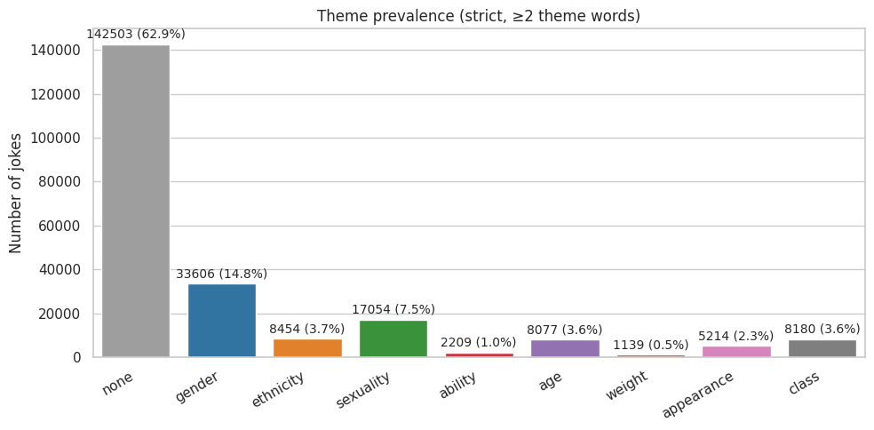
/tmp/ipykernel_1925/653838035.py:81: FutureWarning:
Passing `palette` without assigning `hue` is deprecated and will be removed in v0.14.0. Assign the `x` variable to `hue` and set `legend=False` for the same effect.
ax = sns.boxplot(
/tmp/ipykernel_1925/653838035.py:81: FutureWarning:
Passing `palette` without assigning `hue` is deprecated and will be removed in v0.14.0. Assign the `x` variable to `hue` and set `legend=False` for the same effect.
ax = sns.boxplot(
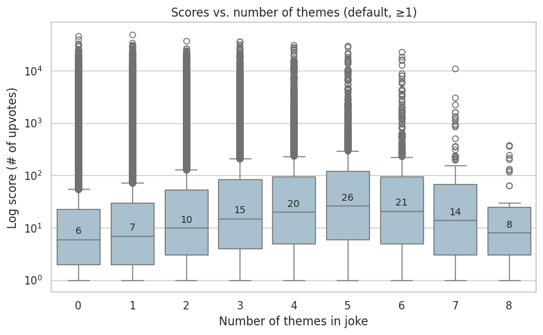
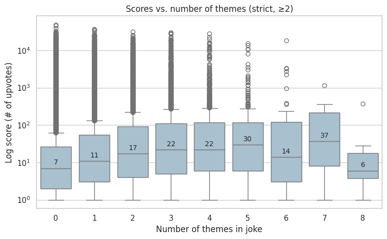


### CATClassification - model training & evaluation
jokes_col_names = jokes_class.columns
#intializes the PCA test (that explains the variance by 95%)
pca = PCA(n_components = 0.95)
#fits the numeric data to PCA
reduced_data = pca.fit_transform(scaled_data)
#creates a dataframe with PCA loading scores
loading_scores = pd.DataFrame(pca.components_, columns = jokes_col_names)
#sets a 0.5 cutoff
threshold = 0.5
#function that gets all the features that are over the cutoff value
def get_top_features_for_each_component(loading_scores, threshold):
#creates a dictionary that stores the features
top_features = {}
#loops through the number of loading scores
for i in range(loading_scores.shape[0]):
component = f"Component {i+1}"
scores = loading_scores.iloc[i]
#finds the feature that is above the threshold and stores it in a dictionary
top_features_for_component = scores[abs(scores) > threshold].index.tolist()
top_features[component] = top_features_for_component
return top_features
#calls the fuction above to get the important features
top_features = get_top_features_for_each_component(loading_scores, threshold)
#print out the features
for component, features in top_features.items():
print(f"{component}: {features}")Component 1: ['theme_ethnicity_count']
Component 2: ['theme_ability_count']
Component 3: ['theme_sexuality_count']
Component 4: ['theme_sexuality_count', 'score_class']
Component 5: ['theme_weight_count']
Component 6: ['theme_class_count']
Component 7: ['theme_age_count']
Component 8: ['overall_length']
Component 9: ['theme_appearance_count']#intializes the PCA and fits the data inside
pca_full = PCA()
pca_full.fit(scaled_data)
#gets the variance
cumulative_variance = np.cumsum(pca_full.explained_variance_ratio_)
#creates a figure for the cumlative varience PCA Plot and labels the graph
plt.figure(figsize = (8, 6))
plt.plot(cumulative_variance)
plt.xlabel('Number of Components')
plt.ylabel('Cumulative Explained Variance')
plt.title('PCA Plot')
plt.grid(True)
#stores the inflection point (number of variables that would make the prediction higher than 95% accurate)
inflection_point = np.argmax(cumulative_variance >= 0.95) + 1
#plots the inflection point on the graph
plt.axvline(x=inflection_point, color='red', linestyle='--')
plt.axhline(y=cumulative_variance[inflection_point], color='red', linestyle='--')
print("inflection_point: " + str(inflection_point))
plt.show()inflection_point: 9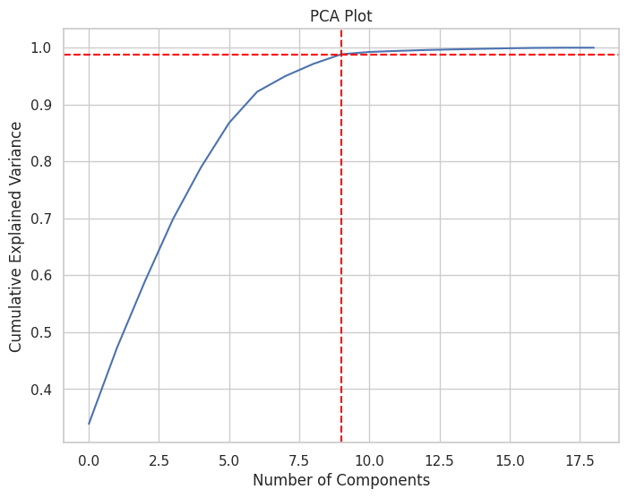
#creates a subset with 7 components most correlated and the target
jokes_subset = jokes_class[["score_class", "theme_gender_bool", "theme_sexuality_bool", "theme_age_bool", "theme_ethnicity_bool",
"theme_appearance_bool", "theme_ability_bool", "theme_class_bool"]]#creates X (everything without the target variable) and y (the target variable)
from sklearn.discriminant_analysis import StandardScaler
X = jokes_subset.drop('score_class', axis = 1)
y = jokes_subset['score_class']
#splits the data into test and train data with 80% train data and 20% train data
X_train, X_test, y_train, y_test = train_test_split(X, y, test_size = 0.2, random_state = 42)
#scaler = StandardScaler()
#X_train_scaled = scaler.fit_transform(X_train)
#X_test_scaled = scaler.transform(X_test)
# Reduce dimensionality
pca = PCA(n_components = 7)
X_train_pca = pca.fit_transform(X_train)
X_test_pca = pca.transform(X_test)#trains the data with Logistic Regression
from sklearn.linear_model import LogisticRegression
from sklearn.metrics import confusion_matrix
log_reg = LogisticRegression(multi_class = 'multinomial', solver = 'lbfgs', max_iter = 100000, random_state = 42)
log_reg.fit(X_train_pca, y_train)
log_predictions = log_reg.predict(X_test_pca)
#creates the confusion matrix
cm = confusion_matrix(y_test, log_predictions)
#plots the confusion matrix with a heatmap and labels the axis and title
sns.heatmap(cm, annot = True, fmt = 'g')
plt.title('Logistic Regression Confusion Matrix')
plt.ylabel('Actual label')
plt.xlabel('Predicted label')
plt.show()/home/codespace/.local/lib/python3.12/site-packages/sklearn/linear_model/_logistic.py:1254: FutureWarning: 'multi_class' was deprecated in version 1.5 and will be removed in 1.7. From then on, binary problems will be fit as proper binary logistic regression models (as if multi_class='ovr' were set). Leave it to its default value to avoid this warning.
warnings.warn(#calculates and prints the accuracy, precision, recall_score, f1_score, and ROC AUC
from sklearn.metrics import accuracy_score
from sklearn.metrics import f1_score, precision_score, recall_score, roc_auc_score
print("Logistic Regression Accuracy:", accuracy_score(y_test, log_predictions))
precision = precision_score(y_test, log_predictions)
print(f"Logistic Regression Precision: {precision:.2f}")
recall = recall_score(y_test, log_predictions)
print(f"Logistic Regression Recall: {recall:.2f}")
f1 = f1_score(y_test, log_predictions)
print(f"Logistic Regression F1 Score: {f1:.2f}")
#predicts the probability of the discrete variable for the PCA test valeus
y_score_log = log_reg.predict_proba(X_test_pca)[:,1]
#calculates the roc_auc_score
roc_auc = roc_auc_score(y_test, y_score_log)
print("ROC AUC Score:", roc_auc)Logistic Regression Accuracy: 0.5745933026650561
Logistic Regression Precision: 0.58
Logistic Regression Recall: 0.30
Logistic Regression F1 Score: 0.40
ROC AUC Score: 0.5731551904064799#trains the data with K nearest neighbor
from sklearn.neighbors import KNeighborsClassifier
knn = KNeighborsClassifier(n_neighbors = 5)
knn.fit(X_train_pca, y_train)
knn_predictions = knn.predict(X_test_pca)
#creates the confusion matrix
cm = confusion_matrix(y_test, knn_predictions)
#creates a heatmap visualizing the confusion matrix
sns.heatmap(cm, annot = True, fmt ='g')
plt.title('KNN Confusion Matrix')
plt.ylabel('Actual label')
plt.xlabel('Predicted label')
plt.show()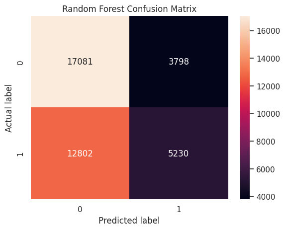
print("KNN Accuracy:", accuracy_score(y_test, knn_predictions))
precision = precision_score(y_test, knn_predictions)
print(f"KNN Precision: {precision:.2f}")
recall = recall_score(y_test, knn_predictions)
print(f"KNN Recall: {recall:.2f}")
f1 = f1_score(y_test, knn_predictions)
print(f"KNN F1 Score: {f1:.2f}")
y_score_knn = knn.predict_proba(X_test_pca)[:,1]
roc_auc = roc_auc_score(y_test, y_score_knn)
print("ROC AUC Score:", roc_auc)KNN Accuracy: 0.5557040425586595
KNN Precision: 0.54
KNN Recall: 0.26
KNN F1 Score: 0.35
ROC AUC Score: 0.5540878405183575#trains the data with Decision Tree
from sklearn.tree import DecisionTreeClassifier
dtree = DecisionTreeClassifier()
dtree.fit(X_train_pca, y_train)
dt_predictions = dtree.predict(X_test_pca)
#creates the confusion matrix
cm = confusion_matrix(y_test, dt_predictions)
#creats a heatmap visualization of the confusion matrix
sns.heatmap(cm, annot = True, fmt = 'g')
plt.title('Decision Tree Confusion Matrix')
plt.ylabel('Actual label')
plt.xlabel('Predicted label')
plt.show()print("Decision Tree Accuracy:", accuracy_score(y_test, dt_predictions))
precision = precision_score(y_test, dt_predictions)
print(f"Decision Tree Precision: {precision:.2f}")
recall = recall_score(y_test, dt_predictions)
print(f"Decision Tree Recall: {recall:.2f}")
f1 = f1_score(y_test, dt_predictions)
print(f"Decision Tree F1 Score: {f1:.2f}")
y_score_dt = dtree.predict_proba(X_test_pca)[:,1]
roc_auc = roc_auc_score(y_test, y_score_dt)
print("ROC AUC Score:", roc_auc)Decision Tree Accuracy: 0.5733854180051914
Decision Tree Precision: 0.58
Decision Tree Recall: 0.29
Decision Tree F1 Score: 0.39
ROC AUC Score: 0.5727368540723066#trains the data on random forest
from sklearn.ensemble import RandomForestClassifier
rf_classifier = RandomForestClassifier()
rf_classifier.fit(X_train_pca, y_train)
rf_predictions = rf_classifier.predict(X_test_pca)
#creates the confusion matrix
cm = confusion_matrix(y_test, rf_predictions)
#creats a heatmap visualization of the confusion matrix
sns.heatmap(cm, annot = True, fmt = 'g')
plt.title('Random Forest Confusion Matrix')
plt.ylabel('Actual label')
plt.xlabel('Predicted label')
plt.show()print("Random Forest Accuracy:", accuracy_score(y_test, rf_predictions))
precision = precision_score(y_test, rf_predictions)
print(f"Random Forest Precision: {precision:.2f}")
recall = recall_score(y_test, rf_predictions)
print(f"Random Forest Recall: {recall:.2f}")
f1 = f1_score(y_test, rf_predictions)
print(f"Random Forest F1 Score: {f1:.2f}")
y_score_rf = rf_classifier.predict_proba(X_test_pca)[:,1]
roc_auc = roc_auc_score(y_test, y_score_rf)
print("ROC AUC Score:", roc_auc)Random Forest Accuracy: 0.5731798206162781
Random Forest Precision: 0.58
Random Forest Recall: 0.29
Random Forest F1 Score: 0.39
ROC AUC Score: 0.5727792788234809Analysis Writeup
Investigating Sociological & Marginalised Themes in Jokes
Team: Ahn Michael, Cat Xia
This writeup presents our central questions, approach, and key findings from our Reddit joke data mining project. Our primary goal was to study patterns between sociological categories (gender, race, ability, etc) and humor in jokes collected from Reddit around 2017, both in terms of distribution of the sociological themes as well as how they relate to user-assigned ratings. Our end project goal is to create a model that predicts the user rating of a joke based on the sociological categories it falls under as well as other linguistic features (joke length, distinct words used, etc).
Content warning - problematic & vulgar language in the data: this project explores sociopolitical themes and aims to accurately represent the way users interact with humor on Reddit, meaning that many of the jokes contain problematic, vulgar, or taboo topics and use of language; in order to accurately reflect this reality and our findings, we will minimally censor the data.
Our chosen dataset & questions
The dataset
We chose this dataset of 200,000+ jokes, collected by Taivo Pungas (A dataset of English plaintext jokes), for the following reasons:
- It includes text data
- We wanted to work with language-focused and social data, to be able to provide some sociological insights
- It provides an interesting perspective for analysing social questions
- Humor (what a culture finds funny) often reflects important insights about what that culture sees as challenging, taboo, and uncomfortable. Marginalised themes - such as talking about someone’s weight or ability - are often at the center of what’s being mocked or reflected on.
- It is complete
- This dataset provides enough observations (rows) to be able to surface interesting trends, and the majority of those rows have complete information for their columns.
- It is available
- Many of the other datasets we considered and found compelling are no longer available or have a high number of data protections making accessing them difficult, due to the sensitive themes of the data.
The questions
Our aim was to connect representation patterns (who/what gets joked about) with audience response (how those jokes are scored by users on Reddit). We set out to answer the two following questions, with sub-questions of interest below:
Q1: What are the differences in distributions among social categories, marginalised groups, or themes represented in the jokes? - Can we see any patterns around what types of jokes are most prominent?
- Does the distribution suggest anything about the demographics of users on Reddit?
Q2: How does each social category/theme relate to the scores and rating - are certain themes rated more highly? - What are the distributions of scores per theme? - Can we predict a joke’s rating based on its length and theme? - Is there major influence from certain users who are more active than others?
While this dataset needed some augmentation and preprocessing to be most useful in answering our questions, it provided a great starting point with enough data points to surface trends.
Our initial observations
The dataset of 200k+ jokes already had some helpful columns such as:
- id (a unique identifier for each joke)
- title (the joke’s title text)
- body (the joke’s body text)
- score (the number of upvotes Reddit users gave)
There was major skew in the score column, the number of upvotes a joke received; some jokes went viral and received very high numbers of upvotes, while the average remained close to 15 upvotes; we could correct this with applying log scaling, winsorising, and/or quartile binning into 5 ratings: VERYLOW, LOW, MID, HIGH, VERYHIGH
We would need to augment the dataset with some engineered features, mainly regarding (a) measuring the themes in the jokes and (b) some helpful linguistic features: joke length, distinct words used, etc
I (Ahn) was initially concerned that the jokes might be too generic and lack any overt indications of the themes I was interested in measuring - however, after reviewing some of the jokes, it was quickly apparent that not only were the themes present, but many presented in a very simple and vulgar form (examples below)
Our preprocessing & data prep
We selected to keep only Reddit jokes: - The original dataset had jokes from 3 different sites, with this distribution: Reddit (~93.7%), StupidStuff (1.8%), and Wocka (4.8%) - While the Reddit jokes had a score column (useful to our questions, measured as number of upvotes the joke received), the StupidStuff and Wocka sets either had no scores or scores using a different scale (0 to 5) - This presented a number of challenges to comparing between the three, and due to the fact that these additional sites only composed around 6% of the total data, we chose to remove them and focus exclusively on Reddit jokes, leaving us with around 200,000 jokes to analyse
We normalised the texts and extracted important text features:
Combine all the joke text (title and body) into one string (whole_text)
There may be interesting trends in what gets placed in the title vs. the body of a Reddit joke, but we decided to focus first on trends in the overall joke text
Applied lowercasing to the text
This removed the influence of capitalising, ensuring that words with different casing would still be recognised as the same word, a common step in NLP/text normalisation
Removed non-letter characters
This removes the influence of numbers, apostrophes, and unusual characters
Tokenised the joke, forming an array of contentful words
This allowed us to calculate both the length of each joke (overall_length), as well as the array and number of distinct words used (distinct_words & distinct_words_count), potentially important features which may influence the scores users assign jokes: for example, perhaps shorter jokes with a more varied vocabulary would be rated higher by users
Removed stop words
This helps our analysis focus on more meaningful content words (“beautiful”, “gender”, “work”) more than structural/grammatical components (“is”, “this”, “and”); we used the ENGLISH_STOP_WORDS set from sklearn.feature_extraction.text
We also extracted 8 key sociological themes from the jokes, to identify the core sociopolitical themes present in the dataset:
- The themes are:
- gender (concepts of gender binary performance, or lack thereof)
- ethnicity (concepts of not only race, but some national identity & language groups)
- sexuality (concepts around romance, sex, and sexuality)
- ability (concepts around mental & physical ability, disability)
- age
- weight
- appearance (concepts around beauty, desirability)
- class (concepts around poverty, wealth, and labor)
- For each of these themes, we calculated both:
- theme_{theme}_count, the number of words present in the joke relevant to this theme
- theme_{theme}_bool, whether - useful for quicker comparisons
We calculated this by coming up with a predefined list of words for each theme, then checking across whole_text_normalised_tokens to see which themes were present.
- This data would be useful in two main ways:
- We created a themes_found column/feature to help summarise quickly which themes were found in each joke - this column’s value consists of an array of tuples (theme, word count), with themes sorted by word count, highest to lowest
Example: [(‘gender’, 3), (‘ability’, 2)] would mean that in this joke, there were 3 words relevant to gender themes and 2 words relevant to ability, with gender sorted to be first (since it is the most present theme)
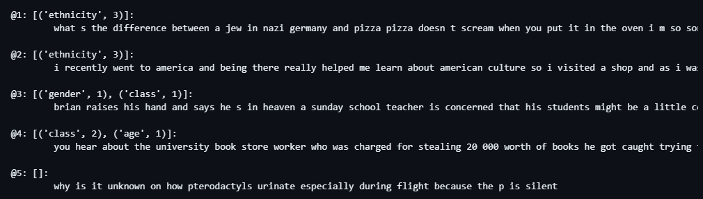
Example jokes with themes found
- We would later create a theme column in a melted dataframe, allowing us to quickly group & analyse the jokes by the themes they contained
- We created a themes_found column/feature to help summarise quickly which themes were found in each joke - this column’s value consists of an array of tuples (theme, word count), with themes sorted by word count, highest to lowest
Our approach to analysis
Creating a flexible, theme-based structure for analysis
We structured the dataset around eight sociological themes: gender, ethnicity, sexuality, ability, age, weight, appearance, and class.
- For each theme, we predefined sets of words to identify if the theme was present in jokes
- We built a melted dataframe with a new
themecolumn, allowing us to easily group, count, and compare jokes across different themes
- To capture different levels of theme presence, we created two parallel datasets:
- Default: counts a theme as present if at least one relevant word appears
- Strict: counts a theme only if at least two relevant words appear
- Default: counts a theme as present if at least one relevant word appears
This gave us two lenses to analyse from: one broad, capturing any mention of a theme, and one stricter, focusing on more explicit/repeated presence of a theme.
Designing plots to connect representation with response
We designed four groups of plots (with both a default and a strict version) to support exploring our research questions:
Bar plots of theme prevalence
To measure which themes are most common in Reddit jokesBox plots of scores by theme
To compare how users rated jokes about different themes- We added median annotations to highlight the most common scores
Box plots of scores vs. number of themes
To examine whether jokes with more sociological themes scored higher or lowerScatter plots of joke length vs. score, coloured by theme
To explore how joke length related to upvotes from users, and whether certain themes influenced this relationship
Balancing thoroughness with interpretability
Because the dataset had ~200,000 jokes, we had to make careful design choices to keep results interpretable:
- Sampling subsets for scatter plots, to avoid overwhelming the visualisation with too many points (choosing to only sample ~10% of the data)
- Log scaling of upvote scores, to reduce skew from viral jokes with extremely high scores and to make cross-theme comparisons more meaningful
- Setting a fixed theme ordering and a consistent colour palette, so that each theme group was always represented the same way across all plots, avoiding confusion and reinforcing interpretability
Implementation structure
We organised our work into two main notebooks:
preprocess_data.ipynb- for text cleaning, feature engineering (overall_length,distinct_words_count, etc), and theme extraction (theme_{theme}_count)
final_analysis_writeup.ipynb- for statistical analysis, plotting, and preparing our findings
This separation allowed us to clearly distinguish between data preparation and analysis/visualisation, making our approach replicable and easier to extend.
Our key findings - summary of analysis
Plots & visual analysis
To prepare for this analysis, we created two versions of the dataframe (default and strict), providing two versions of each plot.
Note: all images of key plots and other important graphics (like the ones displayed here) are visible full size in the /images folder.
- Theme prevalence (bar plots)
- The most common themes were gender, ethnicity, and sexuality
- The least common themes were weight and ability
- Default: 28% of jokes had no visible social theme
- Strict: 63% of jokes contained only one or no theme words
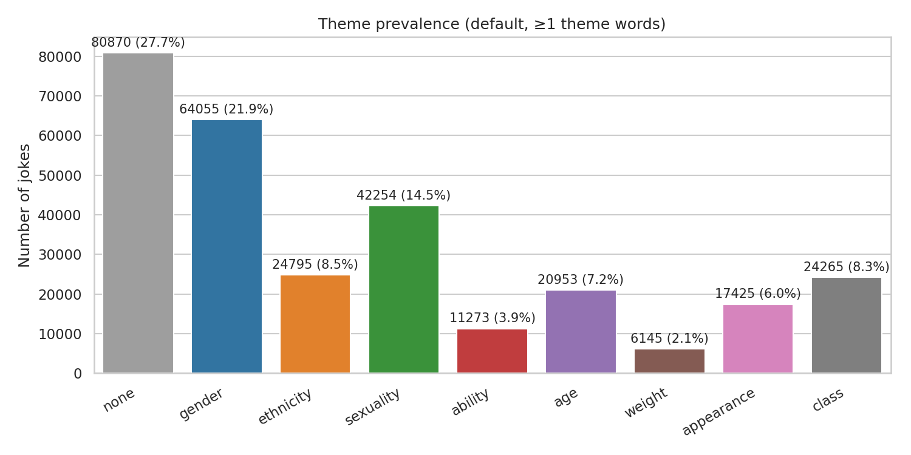
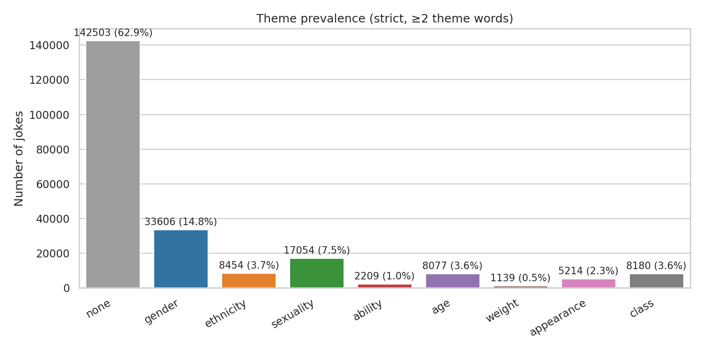
- Scores by theme (box plots)
- Themeless jokes scored much lower, with a median of 6 upvotes
- Less common themes (appearance, age, and class) received the highest scores overall
- Surprisingly, jokes involving ethnicity received lower scores compared to other similarly-frequent social themes:
- This raises questions about whether racial & ethnic jokes are becoming (1) socially disapproved or (2) subtler or less openly expressed
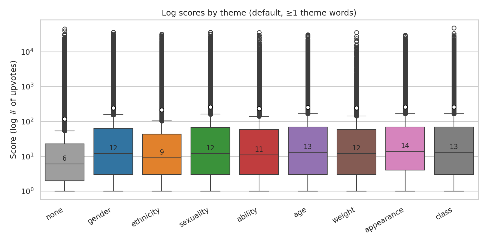
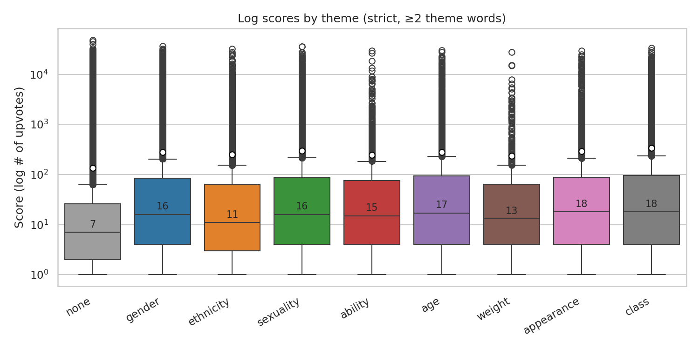
- Scores by number of themes (box plots)
- Jokes with more sociological themes tended to receive higher scores
- At a certain point, it appeared that too many themes made a joke too long or difficult to follow, lowering its score
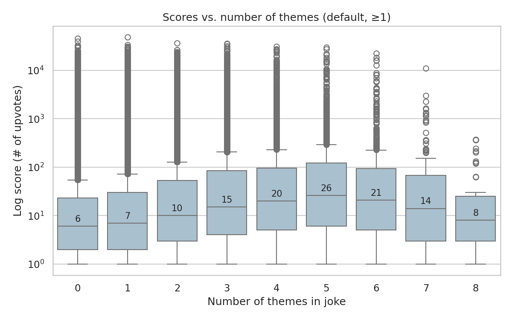
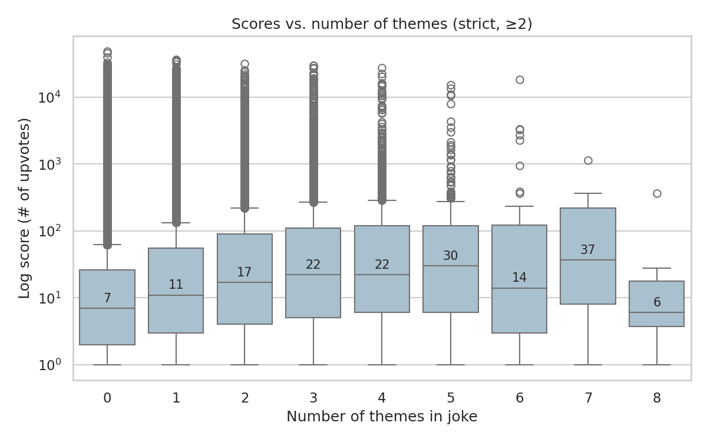
- Joke length vs. score, colored by theme (scatter plots)
- One clear trend: longer jokes tended to receive fewer upvotes overall - Reddit users prefer brevity (or mid-length jokes)
- Jokes with no sociological themes were noticeably shorter than those with themes (clustered at the left)
- No clear differences/trend visible across most themes once length was accounted for
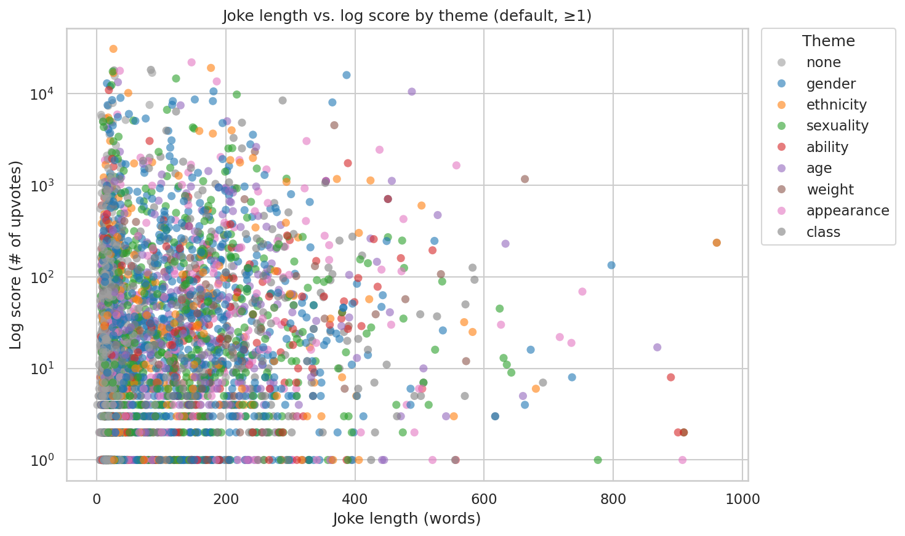
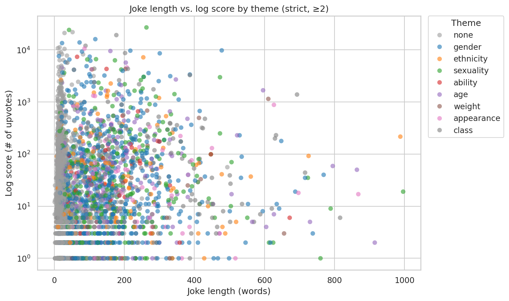
Classification & model analysis
Our summary & next steps
Summary of findings:
Q1: What are the distributions of social categories and marginalised themes represented in jokes?
- Most jokes (~70%) involve a social theme, especially gender, ethnicity & sexuality - indicating that most users’ humor relies on or involves some sense of taboo, social marginalisation, stereotypes, or similar. When we use a stricter threshold for assigning themes to a joke, the percent of jokes which are based in a sociological theme decreases (~40%) but remains significant.
Q2: How does each sociological theme relate to the scores users assign - are certain themes rated more highly?
- Reddit users clearly favor jokes with more social themes (up until around 6 themes, when scores fall off, likely due to length of the joke), and especially positively rate themes which are less common (appearance, age, weight, ability); jokes without a theme are consistently rated lower. While themes such as gender, sexuality, and (especially) ethnicity are more common overall, they do not receive as many upvotes from users.
Next steps:
Here’s what we would do to further improve this project in a future phase: - Bin the scores data into a 5-part rating, using quartile cuts (VERYLOW, LOW, MID, HIGH, VERYHIGH) to make visualisation and classification of scores easier, handling the major skew - Explore using an LLM to evaluate which themes are present in each joke - This would allow us to capture far more nuance about which themes are present but may not show up overtly in a single word; there are many jokes where the context or implication provides the sociological theme, not measurable by any individual word
- Example: